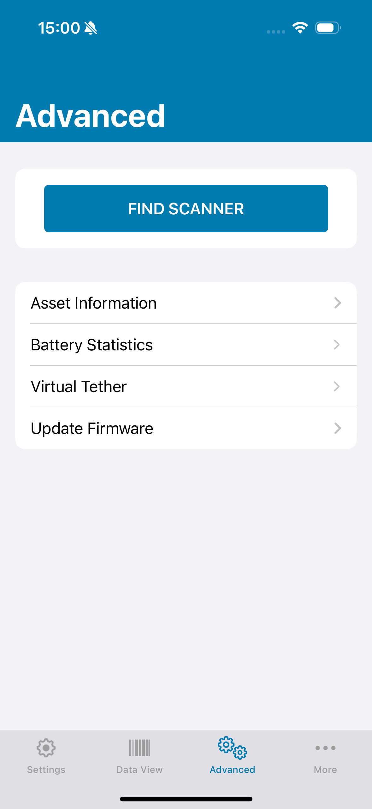

Overview
This page describes the process required to install and execute the Zebra Scanner Control application that is provided with the Zebra Scanner SDK for iOS.
NOTE: The purpose of the scanner Zebra Scanner Control application is to demonstrate the various capabilities of the SDK library. It is not intended for production use purposes.
Installing the Zebra Scanner Control Application
Using the Source Code
Prerequisites
- OS X
- Xcode. Download Xcode from the Mac App Store.
- An iOS Developer account with Apple.
- A provisioned iOS device with iOS 15, or higher installed.
Launching the Zebra Scanner Control Application
To launch the application on the device:
- Connect a provisioned iOS device to your Mac.
- Open the ScannerSDKApp.xcodeproj project file.
-
In the project navigator, choose your device from the Scheme toolbar menu.
NOTE: If your iOS device is listed as an ineligible device, fix the issue before continuing. The version of iOS that is installed on the device must match the deployment target set in the project.
- Click the Run button. Xcode installs the application on the device.
- If a warning message appears that states No matching provisioning profile found, click the Fix Issue button. Xcode needs to add the device to the team provisioning profile before it can launch the application on the device.
- If a prompt appears that asks whether or not codesign may sign the application using a key in your keychain, click Always Allow.
- The application launches on your device.
From the Apple App Store
Prerequisites
- An iOS device with iOS 15, or higher, installed.
Launching the Zebra Scanner Control Application
To launch the scanner application on the device from the Apple App Store:
- Launch the App Store application on your iOS device.
- Search for the Zebra Scanner application, or Zebra Scanner Control application by Zebra Technologies.
- Tap the Get button next to the application, then tap the Install button.
Launching the Zebra Scanner Control Application
- Before launching the application, set the Zebra scanner to the appropriate configuration. See Supported Scanners to determine the required configuration needed for your Zebra scanner.
- Enable Bluetooth on your iOS device and pair it with the Bluetooth Zebra scanner, if it is not paired already. Refer to the relevant Product Reference Guide, User Guide, or Integration Guide for instructions on how to pair the device.
-
Launch the application by selecting the Zebra Scanner Control application from your device's home screen. The following screen displays:
Figure 1: Pair New Scanner
-
Connect to a scanner.
Prior to connecting a scanner if any settings are required to be updated, those can be updated by navigating to the 'More → App Settings' tab. Ex: Communication Mode, Set Factory Defaults. The screen is as follows.
Figure 2: App Settings
- Connect a BLE scanner: Scan the STC (Scan To Connect) pairing barcode on the 'BT LE' tab to connect a BLE scanner (See the Figure 1).
- Connect a MFi supported scanner: Navigate to 'More → Connection Help → Pairing Help' for the pairing information and pair a MFi supported scanner. Navigate to 'MFi' tab and select the paired MFi scanner on the list to connect.
Figure 3: Connect MFi Scanners
-
When a scanner is connected to the application a set of scanner settings are displayed in the 'Settings' tab. At the bottom of the screen, three more tabs: 'Data View', 'Advanced', and 'More , each offering other additional features are displayed.
-
Select the Settings' tab to access basic scanner settings including 'Beeper', 'LED Control', 'Symbologies' and etc.
 Figure 4: Scanner Settings
Figure 4: Scanner Settings
-
To control which symbologies the scanner reads, select the Symbologies option. An on/off control switch appears next to each barcode type displayed in the menu.
Figure 5: Symbologies
NOTE: Custom symbology settings can be configured via 123Scan.
-
Select the 'Data View' tab to view scanned barcodes. This screen also includes an option to view sample barcodes for scanning.
Figure 6: Data View
-
Select the 'Advanced' tab to access Asset Information, Update Firmware and etc.
Figure 7: Advanced Settings
-
Select the Settings' tab to access basic scanner settings including 'Beeper', 'LED Control', 'Symbologies' and etc.
Features Supported in Scanner Control App
- Display barcode data within a tablet/phone application.
-
Apps using the SDK can command and control the scanner.
- LED and Beeper Control.
- Aim Control.
- Enable/disable Symbologies.
-
Scanner control,
- Remote scanner trigger (i.e. Host app-initiated triggering).
- Enable/disable scanning.
- Automatic reconnection to last connected scanner (i.e. scanner goes out range and then returns).
- Enable/Disable the pager vibrating motor.
- Device Configuration (Get, Set and Store Scanner attributes).
-
Asset tracking,
- Model number
- Serial number
- Date of manufacture
- Firmware version
- Simplified pairing using Scan-To-Connect technology.
- Enables image and video capture.
- Update scanner firmware.
- Auto connection to the last connected scanner on app relaunch with Bluetooth Low Energy mode.
Configuring the Xcode Project
The Zebra Scanner SDK for iOS consists of an XCFramework that can be linked with an external iOS application and a set of necessary header files.
Migrating to the XCFramework (ZebraScannerSDK.xcframework) from the static library(libsymbolbt-sdk.a)
-
Delete the existing static library(libsymbolbt-sdk.a) from the project.
Figure 8: Delete the static library from a Xcode project
-
Delete existing Library and User Header Search Paths from the Build Settings.
Figure 9: Delete Library and User Header Search Paths
-
Add ZebraScannerSDK.xcframework to the project.
Copy the ZebraScannerSDK.xcframework provided by Zebra Technologies into the project folder. Select the Project Target, click on Build Phases → Link Binary With Libraries → + Mark → Add Files.
 Figure 10: Add ZebraScannerSDK.xcframework to a Xcode project
Figure 10: Add ZebraScannerSDK.xcframework to a Xcode project
-
Embed and Sign the ZebraScannerSDK.xcframework in General → Frameworks, Libraries, and Embedded Content
 Figure 11: Embed and Sign
Figure 11: Embed and Sign
-
Make sure Runpath Search Paths in the Build Settings is as follows.
 Figure 12: Runpath Search Paths
Figure 12: Runpath Search Paths
-
Import Framework headers where it is necessary.
If the existing Xcode project is an Objective C one, replace the new framework headers with Framework module name like below.
 Figure 13: Import Framework headers to an Objective C project
Figure 13: Import Framework headers to an Objective C project
If the existing Xcode project is a Swift one, replace the new framework headers with Framework module name in the bridging header file as below.
 Figure 14: Import Framework headers to a Swift project
Figure 14: Import Framework headers to a Swift project
Add Zebra Scanner SDK to a new Xcode project.
- Create a new Xcode project and save it to a new project folder.
- Copy the ZebraScannerSDK.xcframework provided by Zebra Technologies into the new project folder.
- Open the new project in Xcode and select your project in the file navigator sidebar.
-
Configure the Xcode project to support one or more external accessory communication protocols through the UISupportedExternalAccessoryProtocols key in your application Info.plist file or via the Info tab of your project settings.
Table 1: Communication Protocols
Communication Protocols Zebra Scanner com.motorolasolutions.CS4070_ssi CS4070 com.zebra.scanner.SSI CS6080
DS8178
RFD8500
Figure 15: Supported external accessory protocols
-
In order to configure your application to communicate with Bluetooth scanners in a background mode, configure your Xcode project to specify the background modes that your application supports using the UIBackgroundModes key in your application Info.plist file or via the Info tab of your project settings.
Figure 16: Required background modes
-
Set Property List Key NSBluetoothAlwaysUsageDescription to use the device's Bluetooth interface. Description value should be a string.
Example: "Zebra Scanner Control App uses Bluetooth to find, connect and communicate with nearby Zebra devices. Please grant access".
Figure 17: Privacy - Bluetooth Always Usage Description
-
Select your Target, and then its Build Phases tab. Expand the Link Binary With Libraries item. Add the following frameworks by clicking the + button:
- ZebraScannerSDK.xcframework
- ExternalAccessory
- CoreBluetooth
Figure 18: Link Binary with Libraries
-
Embed and Sign the ZebraScannerSDK.xcframework in General → Frameworks, Libraries, and Embedded Content
Figure 19: Embed and Sign
-
Make sure Runpath Search Paths in the Build Settings as follows.
Figure 20: Runpath Search Paths
-
Import Framework headers where it is necessary.
If the Xcode project is an Objective C one, import the framework headers with the Framework module name like below.
Figure 21: Import Framework headers to an Objective C project
NOTE: With the above steps your Objective-C project will be configured to use the Zebra Scanner SDK for iOS. Further steps as given below are required to configure a Swift Project for accessing the Zebra Scanner SDK.
-
Create a Bridging Header by adding a new header file to your Xcode project.
- Select File → New → File.
- Then select iOS and under Source, click Header File.
- Name your file "YourProjectName-Bridging-Header.h". Example: "Scanner", the file is named "Scanner-Bridging-Header.h".
- Create the header file.
-
Setting the Objective-C Bridging Header path.
- Select your Target and then navigate to the Build Settings tab.
- Navigate to Swift Compiler - General section in Build Settings tab.
- Set Objective-C Bridging Header path.
- Next to Objective-C Bridging Header, you will need to add the path of your header file as follows. $(SWIFT_MODULE_NAME)/ YourBridgingHeaderFileName.h
Figure 22: Objective-C Bridging Header
-
Adding Framework header files to the bridging header file.
- Open your newly created bridging header file.
- Import all the Framework header files as below.
Figure 23: Framework headers in Bridging header
- Any headers listed in the bridging header file will be accessible from your Swift classes without importing those files.
- Your Swift project is now configured to use the Zebra Scanner SDK for iOS.
NOTE: When bridging an Objective-C interface to Swift, int type in Objective-C is bridged as Int32 in Swift. Therefore, it requires to be casted manually when accessing SDK APIs in Swift.